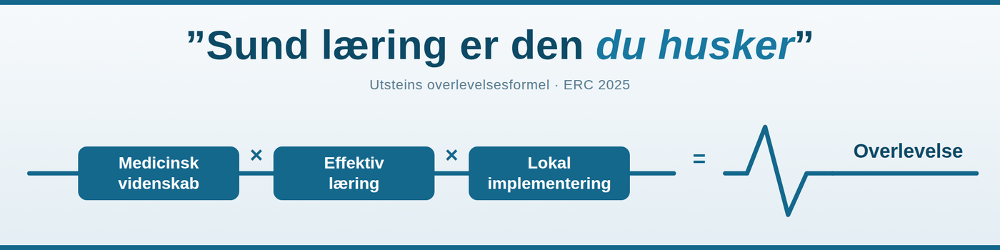
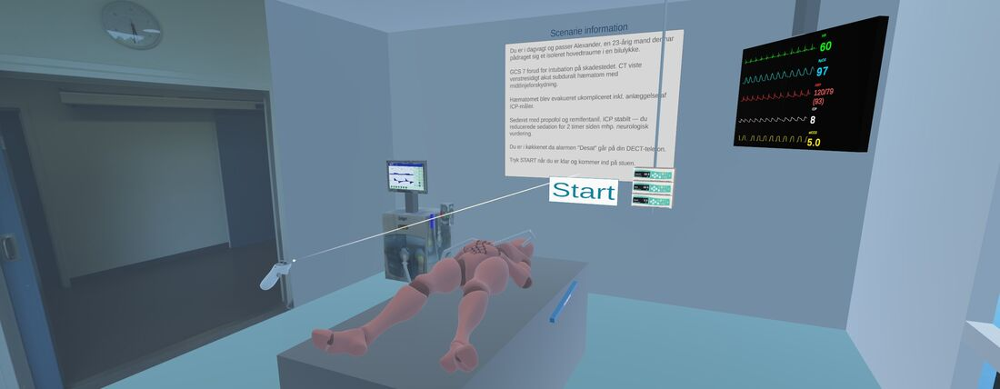
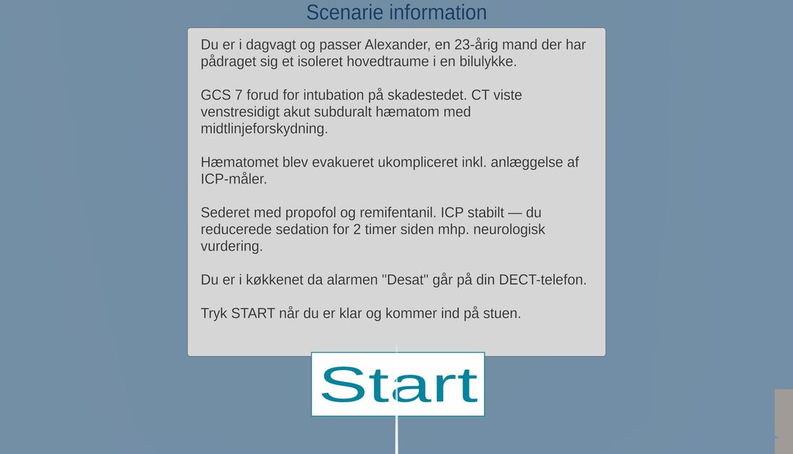
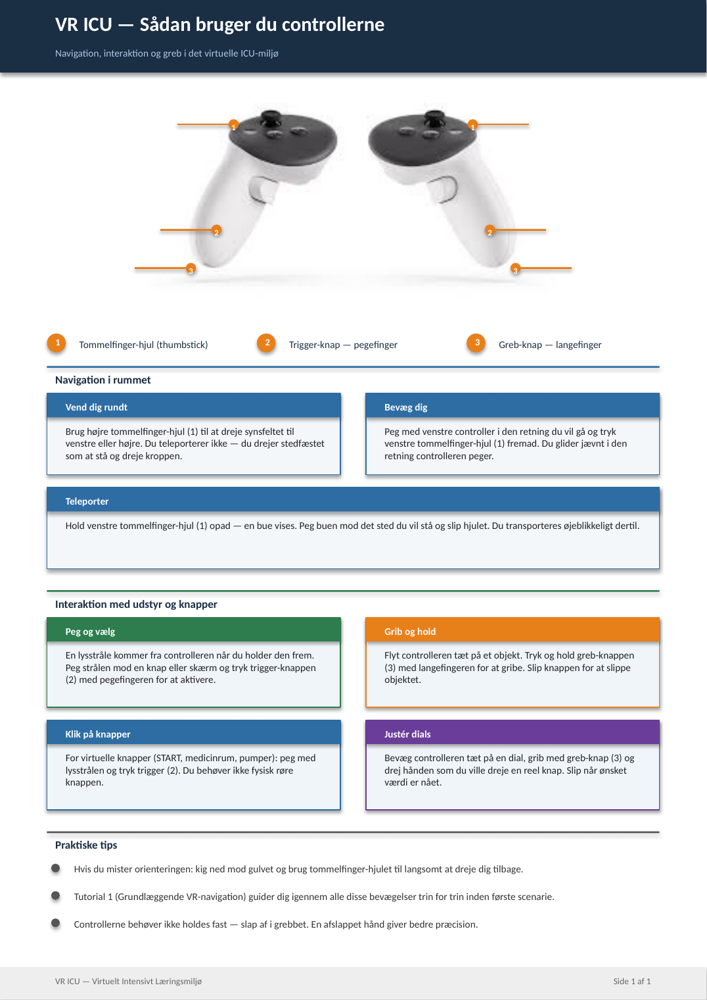
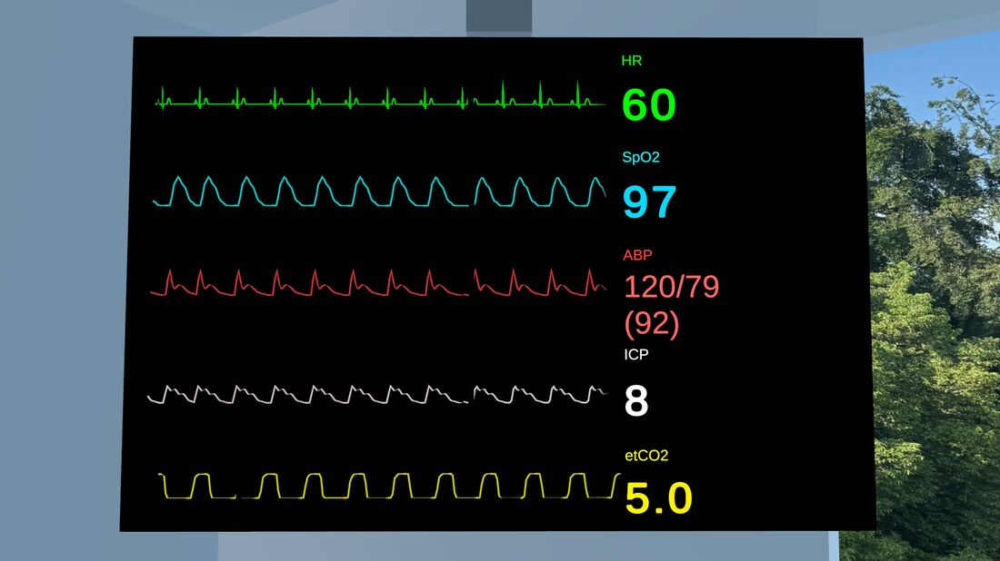
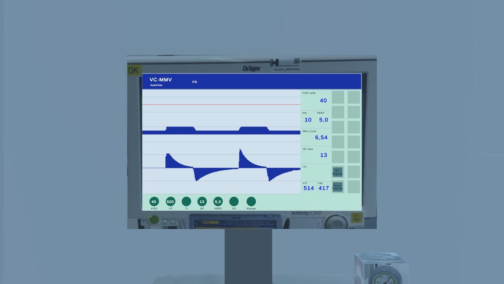
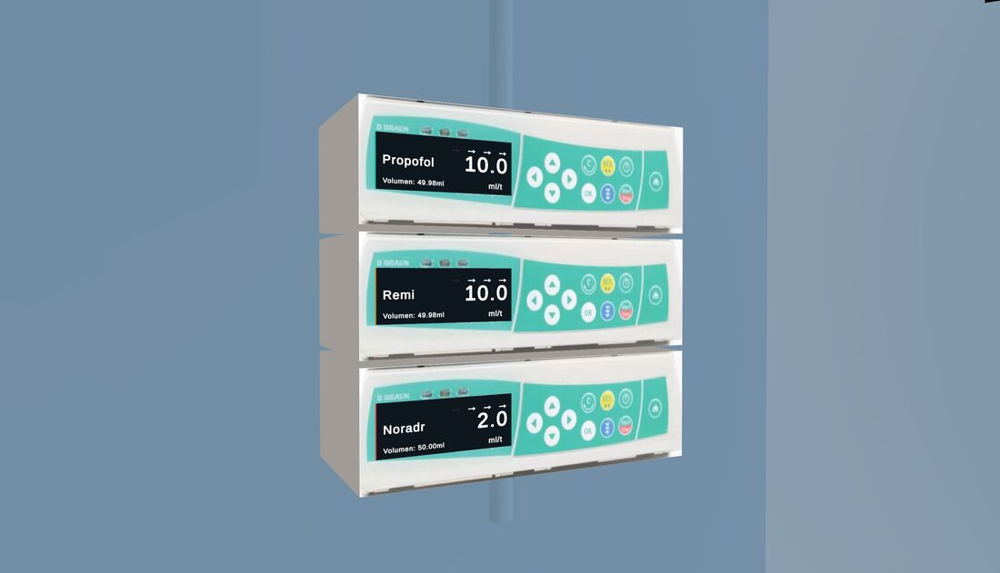
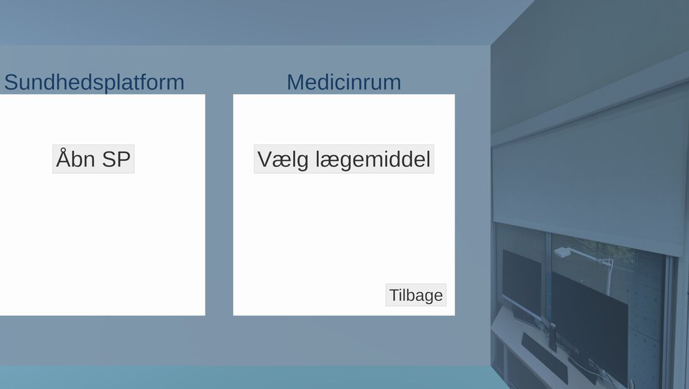
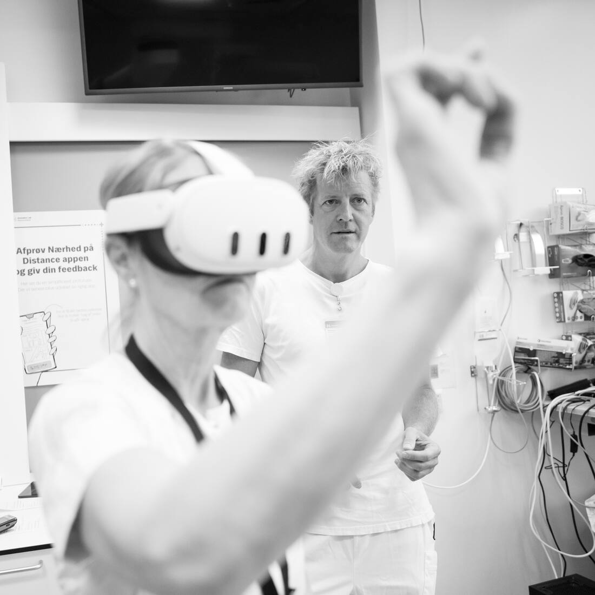
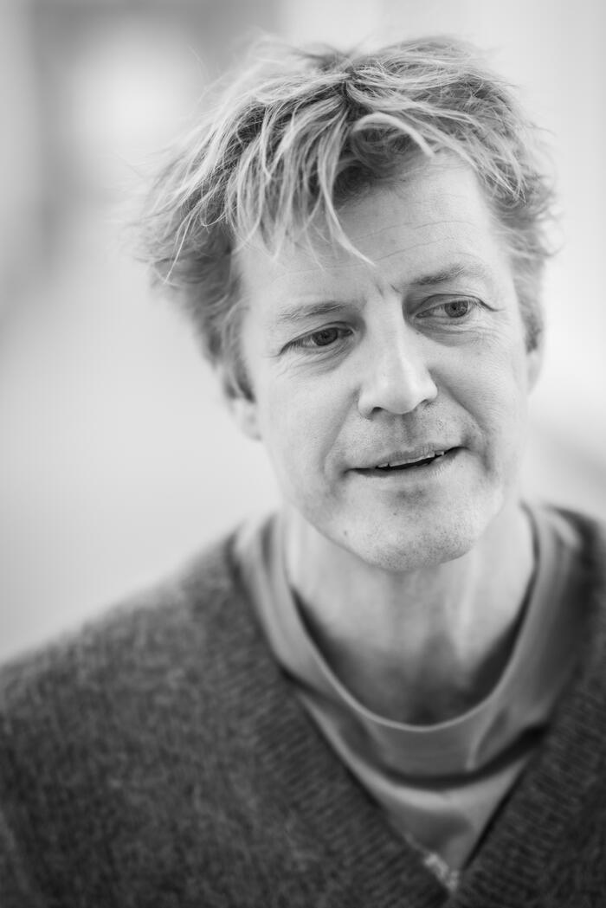

VR ITA er et virtuelt træningsmiljø målrettet sygeplejersker og læger, der arbejder på en intensiv afdeling. Her kan personalet træne kritiske aspekter af intensiv terapi, som er vanskelige at lære gennem teoristudier alene.
Læs om projektet Kontakt
Globalt mangler der højt specialiseret sundhedspersonale, og det skaber ulighed i sundhedstilbuddet verden over. Medicinsk uddannelse står samtidig over for krav om større effektivitet — men simulationstræning, den mest effektive læringsform, nedprioriteres ofte på grund af omkostninger. Konsekvensen er, at nyansatte introduceres for tidligt til klinisk arbejde, hvilket overbelaster de erfarne medarbejdere. VR ITA er svaret: et virtuelt træningsmiljø af en intensivafdeling med automatiseret feedback, der gør uddannelsen mere tilgængelig — og billigere.
Situationer der forekommer sjældent, men hvor det virkelig gælder — øves her, så du er forberedt, når det sker.
Bliv fortrolig med respirator, infusionspumper og monitorering — uden risiko for patienter.
Træningen kræver kun et headset. Den kan gennemføres på afdelingen, når det passer ind i vagten — dag som nat.
Simulationstræning i en virtuel intensivafdeling øger effektiviteten af oplæringen af det sundhedspersonale, der skal arbejde på en intensiv afdeling.
Personalet får mulighed for at prøve specialiseret udstyr uden risiko for patienter.
Uddannelsestiden kan forkortes, fordi træningen ikke afhænger af, hvad der tilfældigvis sker i klinikken.
Nyansat personale bliver hurtigere selvstændigt i hverdagens opgaver og procedurer.
Mindre behov for tæt supervision frigiver erfarne medarbejdere til patientbehandling.
For at få udbytte af læringsmiljøet skal brugeren først lære enkelte helt basale færdigheder — at tage headsettet på og betjene de to controllers. Miljøet kan bruges siddende, stående eller ved at bevæge sig rundt på intensivstuen. Det første modul er derfor et VR-kørekort, hvor man træner simple manøvrer og lærer at navigere til medicinrum og sundhedsplatform samt at kalde hjælp.



Et komplet virtuelt intensivmiljø: patient, monitor, respirator, infusionspumper, medicinrum, sundhedsplatform og DECT-telefon — organiseret i moduler fra VR-kørekort til fuld skala-scenarier.
Udstyret i miljøet er tilpasset de intensive afdelinger i Region Hovedstaden (juli 2026). Udgaver tilpasset landets øvrige regioner forventes i efteråret 2026.
En session kræver ingen underviser — brugeren gennemfører den på egen hånd, når det passer ind i vagten. Headsettet ligger klar på afdelingen.
Brugeren tager headsettet på og åbner appen VR ITA.
Nogle moduler starter med et lille teorioplæg — fuld skala-simulation med en sygehistorie. Efter introduktionen trykker man START.
Scenariet er aktivt, og brugeren skal udføre en række interventioner.
Når scenariet er gennemført, fremkommer en evalueringstekst med gennemgang af handlingerne.
Brugeren ledes tilbage til forsiden og kan vælge et nyt modul eller scenarie.
VR ITA er designet som platform fra dag ét: nye scenarier og nye afdelinger er konfiguration — ikke måneders udvikling.
Udviklet og afprøvet på Neurointensiv Afdeling, Rigshospitalet.
Fra de første test i klinikken til det virtuelle intensivmiljø.





Demovideoer optaget direkte fra headsettet. Flere videoer er på vej og tilføjes her løbende.
Demovideo på vej
Demovideo på vej
Demovideo på vej
Demovideo på vej
Demovideo på vej

Speciallæge i anæstesiologi med klinisk hverdag på Neurointensiv Afdeling, Rigshospitalet. PhD i subaraknoidalblødning (SAH).
ERC Educator og kursusleder (ALS & EPALS) med mere end ti års nationalt ansvar for simulationstræning. Master of Business Coaching.
VR ITA udspringer af en enkel observation: de situationer, der kræver mest af os, er dem, vi får færrest chancer for at øve. Det kan virtual reality lave om på.
Vil du høre mere om VR ITA — som kliniker, afdeling, samarbejdspartner eller fond — så tag endelig kontakt.
Skriv til Søren Bache